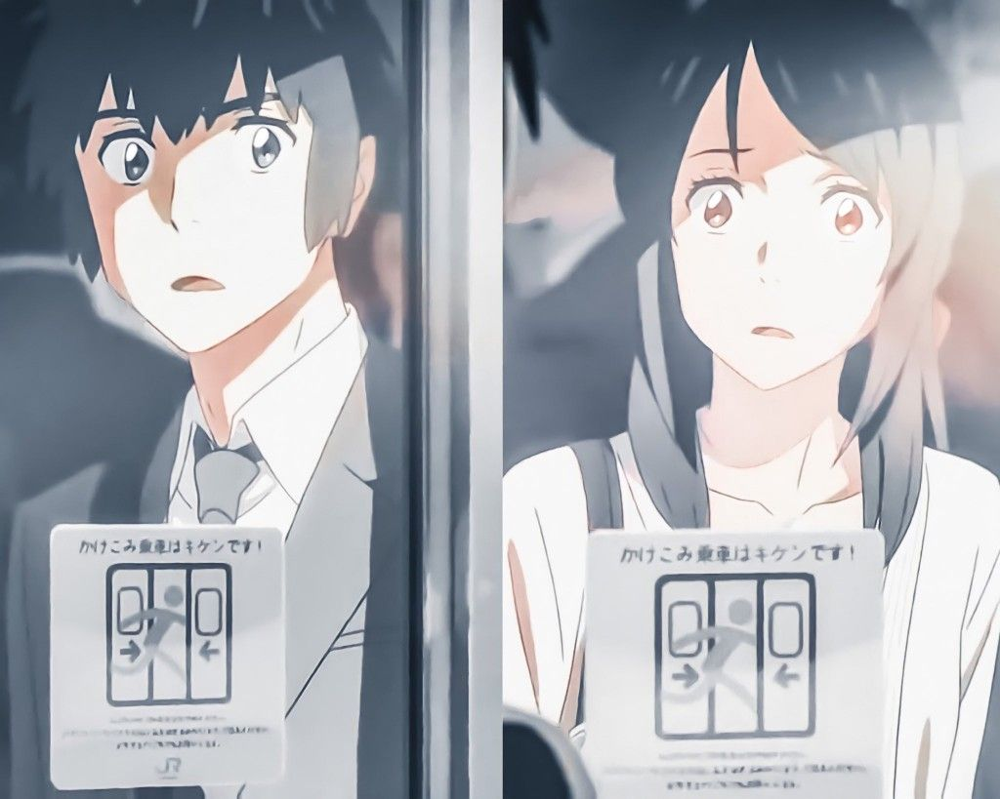

I ran.
I ran and ran along the rough forest path, repeating his name over and over.
Taki-kun. Taki-kun. Taki-kun.
-- It’s okay. I still remember. I won’t forget.
Before long, the light from Itomori Village began to peek through the gaps in the trees, and my ears began to pick up the faint festival music riding on the winds.
Taki-kun. Taki-kun. Taki-kun.
In the sky above, Tiamat’s Comet, with its dazzling tail trailing behind, sparkled brighter than the moon. I screamed his name in an attempt to push back the crushing fear.
Your name is Taki-kun!
The rumbling of a motorcycle engine became audible, and a pair of headlight beams shone into my eyes.
“Tesshi!” I yelled and ran towards the bike.
“Mitsuha! Where the heck were you!?”
Tesshi, wearing a big ridiculous helmet with a flashlight attached like he was going cave exploring or something, scolded me. Unfortunately, I couldn’t exactly explain what happened.
Instead, I conveyed Taki-kun’s words.
“He said sorry for breaking your bike.”
“Huh? Who?”
“Uh, me!”
Tesshi looked skeptical but didn’t question any further. He cut the engine and, as he ran off, yelled, “You’re gonna explain everything later, okay?!” Itomori Electrical Substation - Entry Forbidden.
A plate with those words was attached to the metal fence, and beyond it lay the silhouettes of power transformers and steel towers and other complicated looking devices. It was an unmanned facility; the only light came from the red lamps installed on the machines. “It’s gonna fall? That? For real?!” Tesshi, looking up at the sky, asked me.
We were standing in front of the fence surrounding the substation, gazing at the glittering comet above.
“It’s gonna fall! I saw it with my own eyes!” I said, staring straight into Tesshi’s eyes. Only two hours until impact. There was no time to be explaining things.
Tesshi gave me a suspicious look for a brief moment, then broke out into a little laugh. The laugh seemed to be more out of desperation than anything else. “Oh, so you saw it, huh? Well then I guess we have no choice!” With renewed vigor, he zipped open his sports bag, revealing a cylinder shaped like a relay baton wrapped in brown paper tightly packed in there. A water gel explosive. I gulped at the sight of it. Tesshi then took out a large pair of bolt cutters and began snipping away at the chains blocking the entrance to the substation. “Mitsuha,” he said. “Any further than this and it’s not just some prank.”
“Please, keep going. I’ll take all the responsibility.”
“Are you dumb? That’s not what I was asking for,” he said almost angrily, and for some reason turned a little red in the face. “Now we’re partners in crime!”
As if to smash the encroaching darkness, the sound of the chains being severed rang loudly throughout the surrounding air.
“Once the town’s power goes out, the school will switch to its emergency power system right away. Then we can broadcast!” Tesshi yelled into his smartphone.I held his phone up to his mouth as he drove the motorcycle. A few homes beside the prefectural road sporadically illuminated our path. And ahead lay a dense gathering of light amidst the dark mountains, our destination: Miyamizu Shrine, site of the autumn festival. A strange sense of nostalgia suddenly overcame me, as if I were returning home after a long period of absence.
“Mitsuha, Saya-chin wants to talk to you.”
“Hello? Saya-chin?” I put the phone against my ear.
“Ahhh Mitsuhaa!” She was crying, or at least on the verge of it. “Hey, do I really have to do this!?”
A sharp pain shot through my chest when I heard her voice. If I were in Saya-chin’s position, I would probably be crying too. Just sneaking into the broadcast room at night alone by itself was no easy task.
“I’m sorry Saya-chin, but please.” Nothing I could say would make her job easier. “If we don’t do this, lots of people will die! Once you start broadcasting, keep going as long as possible!”
No response. Only a faint sniffling.
“Saya-chin? Saya-chin!”
As anxiety began to take hold of me, the speakers suddenly burst back to life.
“Fine whatever! You and Tesshi owe me big time!”
“What did Saya-chin say?”
“You owe her big time.” Putting the phone away in my skirt pocket, I answered loud enough to be heard over the motorcycle engine.
“Alright, let’s go!”
The moment Tesshi let out his battle cry, the sound of a loud explosion, like that of a giant firework going off, rang out behind us. Stopping the bike, the two of us turned around. Two, three, four. More explosions followed one after another, and fat columns of black smoke began to rise up from the middle of the mountain where we were just minutes ago. An enormous transmission tower gradually tilted over, as if in slow motion.
“Tesshi!” My voice quivered.
“Ha.. ha…” His breathing, which almost sounded like laughing, also trembled.
Then, with an explosive bang, all the lights in the village abruptly went out. We did it. We really did it.
All of a sudden, the violently loud, ear rupturing wails of the emergency sirens burst out of speakers all around town. The ominous sounds, like screams of a giant, reflected off the mountains and completely enveloped the village.
Saya-chin. She took over the wireless disaster system. Tesshi and I locked eyes, nodded, then got back on the motorcycle. As we started out towards the shrine, Saya-chin’s voice began flowing from the speakers, as if to cheer us on. She read exactly what we had planned out in a voice so calm no one would have believed that she was crying just moments ago.
Tesshi steered off the main road and onto a narrow mountain path. Going this way, we could reach the back of the main shrine building without having to drive up the stone staircase along the main entrance. I listened to Saya-chin’s voice sound throughout the village as I clung onto Tesshi’s back in my violently shaking seat. It was almost identical to her older sister’s voice; almost no one would doubt that it wasn’t an official broadcast.
“This is it! Let’s go, Mitsuha!”
We jumped off the bike and began descending the flight of wooden stairs on the slope behind the shrine. Through the gaps in the trees I could see the countless stalls lined up on the grounds and the crowds of people walking between them like fish swimming aimlessly in a dark, overcrowded tank. As we ran, we threw off our helmets.
We reached the bottom, which put us right behind the main shrine building. Surrounding us were the silhouettes of people gathered for the festival and rapidly growing seeds of uneasiness among them. As if racing each other, Tesshi and I sprinted through the crowd, yelling as we went.
“Run away! Fire in the mountains! We’re in danger here!”
Tesshi’s voice was so loud it sounded like he was using a megaphone. I also screamed my lungs out, not about to lose to him. Run away! Fire! Run! Before long, we reached the dead center of the shrine grounds.
“Ehh, is there really a fire?” “Hey, let’s get out of here.” “Do we have to walk to the high school?”
Our shouting seemed to be doing some good at backing up Saya-chin’s orders on the wireless system. Couples in yukatas, groups of children, and elderly holding hands with their grandkids all shuffled hurriedly towards the exit. I breathed a sigh of relief. At this rate we would be fine. All thanks to him… him?
“Mitsuha!” Tesshi’s abrupt call caught my attention. “This is bad!”
Following Tesshi’s gaze, I noticed that there were more than a few people sitting idly beside food carts or standing around chatting. Some were even having a leisurely smoke, drinking, or joking around cheerfully.
“If a fire doesn’t actually come, we’ll never be able to get these guys to move! We need the fire department to come and force them out! You need to go to the town hall and convince the mayor…”
Tesshi stood almost right above me, yet his desperate shouts sounded far, far away.
… him?
“Oi, Mitsuha… what’s wrong!?”
“... Tesshi what do I do?” Unable to think about anything else, before I knew it I had turned to Tesshi in distress. “I can’t remember his name!”
“What are you talking about idiot!?” Tesshi yelled at me. “Look around you! You started all this!” He glared at me, his expression a mix of anger and concern.
Immediately evacuate to Itomori High School… For the first time, I noticed that Saya-chin’s voice was trembling with fear as she repeated her instructions on the speakers. “Go Mitsuha!” Tesshi yelled. This time, rather than scolding me, he seemed to be desperately pleading. “Go and convince your old man!”
I suddenly snapped back to the moment as if someone had slapped me. “Got it!” I nodded and sprinted off with all my might.
Behind me, I heard Tesshi’s yelling once again. “Then run away! Go to the high school!” Saya-chin’s voice continued to echo throughout the village. “There is danger of a wildfire. Please evacuate to Itomori High School.”
I plowed through the stream of people, dashed through the torii which marked the shrine’s exit, and ran down the flight of stone stairs. You started all this, Tesshi had said. He was right. I, we, started all this. As I ran, I glanced up at the comet. Now that all the lights on the ground had gone dark, it appeared even brighter. The comet trailed its long tail above the clouds, leaving behind glittering bits of dust as if it were a giant moth showing off its brilliant scales. You’re not gonna win this one!
It’s going to be okay. We can make it in time. I repeated those words, which someone who I can’t remember had recently said to me, in my head.
It happened on an autumn day, when I was still a middle schooler.
Around that time, I was just getting used to living alone with my dad. We had finished dinner, which wasn’t very good despite how much we struggled to make it, and were drinking tea. I munched on an apple, while my dad had a beer.
The comet was just about the only thing on the news that day. I didn’t really have any interest in stars or space or all that, but those phrases like revolving around the sun with a period of 1200 years, or an orbital radius of 16.8 billion kilometers blew my mind. Just knowing that such phenomena on a scale so much larger than ourselves existed in the world amazed and frightened me at the same time.
“Look at that!” The announcer in the television suddenly shouted in excitement. “It appears as if the comet has split into two. Around it… countless falling stars are springing forth.” The camera zoomed in, showing the fractured comet sailing through the sky with the highrises of Tokyo in the background. Countless long, thin strands continually appeared and disappeared at the head of the comet. I opened my eyes wide, entranced by the otherworldly beauty of the spectacle.
The creak of a door being opened suddenly mixed in with the commands being broadcasted on the wireless disaster system. A short scream from Saya-chin, followed by familiar voices of a few men flowed from the speakers.
[What are you doing!?] [Hurry up and turn it off!]
After the crash of a chair being toppled over and the short screeching sound of feedback, the transmission cut off.
“Saya-chin!” I stopped running. She was found by the teachers. Large drops of sweat poured out of my body and landed on the asphalt with plopping noises. I stood on a road which circled the lake and led to both the town hall and the high school. I heard confused voices from a few people walking along the evacuation route.
“What’s going on?” “Something happen?” “Do we still evacuate?”
This is bad, I began to think, when the speakers sprung to life once again.
[This is the Itomori town hall.]
This time, it wasn’t Saya-chin or his sister: it was the old man in charge of broadcasting at the town hall, whose voice I vaguely remembered.
I burst out running again. Someone from the town hall must have found out what we were doing and contacted the school. Right now, Saya-chin was probably being questioned by the teachers. Tesshi will probably be in big trouble too.
No! Don’t wait where you are! I need to stop this broadcast! I left the main road and dashed down a rough sloped path with thick grass growing out from the cracks in the asphalt: a shortcut to the town hall. Thorns pricked at my bare feet. Spiderwebs stuck to my face. Some kind of bug got into my mouth.
Finally, I reached the bottom of the hill and once again ran onto the main road. I couldn’t spot a single person around me; my only companion was the voice continuing to order citizens to wait for further instructions. As I ran, I spat out a wad of saliva and wiped the sweat and tears and spider silk off my face with my sleeve. My legs were beginning to lose strength and falter. Still, I ran. I refused to slow down. On a sharp curve, my body grazed the guardrail which was the only thing preventing me from tumbling into the lake below.
“... Eh!?”
I looked to the side, alarmed. The lake was shining faintly. Still running, I peered at it more carefully. No, the lake itself wasn’t shining. The calm surface of the water was reflecting the sky. As if it were a mirror, the lake displayed two glittering tails.... two? I glanced up.
-- Ah, at last.
“... it split!”
I rapidly flipped through the channels. All of them had announcers enthusiastically narrating the sudden, unexpected celestial show.
“The comet has no doubt split into two.” “This was not expected.” “This is truly a fantastic sight.” “It is safe to say that the comet’s core was split.” “It was far from the Roche limit, so the only possible explanation is that some change occurred within the comet itself…” “No word from the National Astronomical Observatory yet…” “Something similar happened in 1994 with the Shoemaker-Levy Comet; it broke into at least 21 fragments as it collided with Jupiter.” “Is there any danger to us?” “Comets are lumps of ice, so most of it will likely melt before reaching the surface. Even if it becomes a meteorite, the probability of it landing on inhabited ground is very low…” “It is hard to predict the course of the fragments in real time.” “Being able to witness such a grand spectacle, and moreover it just happening to be night here in Japan… this is truly good luck we may only receive once in a lifetime.”
“I’m going to take a look!” I told my dad as I abruptly stood up and dashed down the stairs of the apartment building. From a nearby hill, I gazed up at the night sky. Myriad lights sparkled above, almost as if a whole other Tokyo had been formed. The sight was simply beautiful, like something straight out of a dream.
As I ran through the dark village like a lost child, the fragmented comet seemed to only make my loneliness more prominent.
-- Who? Who? Who was he?
Continuing to run, and unable to tear my eyes away from the comet, I desperately racked my brain.
-- Someone important. Someone I must not forget. Someone I didn’t want to forget.
Only a little farther until the town hall. And only a little longer until the comet became a meteorite and fell.
-- Who? Who? Who are you?
I drew out the last of my strength, raising my speed.
-- Your name?
Suddenly I let out a yelp. The tips of my toes had gotten caught in a depression in the road. Before I even had time to think of falling, the ground was already right in front of my face. I felt an impact as my body began to roll around. Piercing pain spread throughout every limb. My vision blurred, then went black.
………
……
… But…
I heard his voice in my ears.
“So we don’t forget each other when we wake up.”
Back then, you said that… and wrote on my hand.
Still lying on the ground, I opened my eyes. In my fuzzy field of view, I managed to make out my right hand, clenched in a fist. Slowly, I lifted up my stiffened fingers. Something was written there on my palm. I strained my eyes and looked.
I love you.
My breath stopped for a moment. I tried to stand up, but there was hardly any strength left in me. Still, eventually my two legs once again stood on the asphalt. Then, once more, I looked at my palm. But that was all that was written.
Tears began to flow from my eyes, returning my vision to a blurry mess. At the same time, a wave of warmth began to spread throughout my body. As I bawled, I laughed softly and told him, “How am I supposed to know your name with this…”
Then, once again, I broke out in a dash.
I’m not scared anymore. Not frightened of anyone. Not lonely.
I understand now.
I am in love. We are in love.
That’s why we’re going to meet again.
That’s why I’m going to live.
I will live.
No matter what happens, even if a comet falls on me, I will live.
No one would have predicted that the comet’s core would have split into two, or that a massive lump of rock was hidden within its ice covered interior.
Apparently, that day happened to be the village’s Autumn Festival. The time of impact was 8:42 p.m. And the place of impact: Miyamizu Shrine, the main center of the festival. The meteorite instantly annihilated everything in a broad area centered around the shrine. The impact created a crater almost a kilometer wide in diameter. Water from the nearby lake flowed into the newly created depression, drowning almost half of the village. Itomori Village became the stage for the worst meteorite disaster in human history.
All that information ran through my head as I looked down upon the new Itomori Lake. The calm surface of the water reflecting the warm rays of the sun amidst the morning fog seemed so tranquil, making it hard to believe that three years ago such a tragic event unfolded there. The fact that the comet I saw three years ago in Tokyo, which had enraptured me with its beauty as it streaked across the night sky, brought about this destruction was also somewhat hard to come to terms with.
I stood all alone on the boulder covered summit of a mountain.
When I woke up, I had found myself here.
Suddenly, I got the urge to look at my right hand. There was a random line drawn on my palm, like someone had started to write something.
“What is this…?” I mumbled softly. “What was I doing here?”
Somewhere along the way, I developed a few habits.
Like touching the back of my neck when I panic. Or staring into my own eyes reflected in the mirror when I wash my face. Or always taking a moment to gaze at the scenery when I step out of the door in the morning, even when I’m in a hurry. And also, looking at my palm for no reason.
Next station is Yoyogi… Yoyogi…
As the synthetic voice sounded throughout the train car, I noticed that I was doing it again. I removed my gaze from my right hand and idly looked out the window. Hordes of people standing on the platform flowed by as the train slowed to a stop.
Suddenly, all the hairs on my body stood up.
It was her.
She was standing on the platform.
As soon as we stopped, I dashed out of the train, too impatient to wait for the doors to fully open. Twisting my body around, I rapidly ran my eyes over the entire platform. After a few passengers walked by giving me suspicious looks, I finally calmed down. There wasn’t even anyone in particular I was looking for. ‘She’ is no one. This is another one of those habits I picked up some time ago, probably one of the weirder ones.
As I stood on the platform waiting for the next train to come, I realized I was staring at my palm again. And I thought to myself, just a little longer Just a little longer is enough. That’s all.
Somewhere along the way, I had also begun to wish for something, not knowing exactly what that something was.
“I applied to work for this company because I like buildings -- or rather, the scenery of a town, of people living.”
The faces of the four interviewers sitting in front of me seemed to darken. No no, it must just be my imagination. This is the first time I’ve been able to make it to a second interview. I can’t let this chance go.
“It’s been like that since a long time ago. I don’t really know why, but… anyway I like it. Gazing at buildings and observing the people who live and work there. So I often went to cafes and restaurants, getting part time jobs and--”
“I see.” One of the interviewers gently cut me off.
“Then may I ask why you want to work in the construction industry as opposed to the food industry?”
The one who asked me that was a middle aged woman, the sole interviewer who looked like a nice person. I realized I messed up a little when talking about my motives for applying. I began to sweat in my uncomfortable suit which I haven’t yet grown accustomed to wearing. “Well… interacting with customers in my part time jobs was fun, but I want to be involved in something bigger…” Something bigger? This is like an answer a middle schooler would give. I could feel my face growing bright red. “Basically… even Tokyo could disappear at any moment.” This time, the four interviewers faces darkened for sure. Noticing that I had begun to touch the back of my neck, I panicked and quickly put both hands back on top of my knees. “So I want to build the kind of town that will remain in people’s memories even after it disappears…” This is bad. Even I have no idea what I’m saying at this point. Another failure, I thought as I shifted my gaze to the gray skyscrapers rising up behind the interviewers, holding back the urge to just start bawling.
“So today’s interview… how many companies has it been now?” Takagi asked.
“Haven’t been counting,” I answered gloomily.
“Doesn’t look like you’re getting in,” Tsukasa said in an annoyingly cheerful voice.
“I don’t want to hear that from you!” I shot back angrily.
“Maybe it’s because your suit looks so bad on you,” Takagi said with a laugh.
“You guys’ aren’t much better!”
“I’ve gotten unofficial offers from two companies,” Takagi said happily.
“Me, eight companies,” said Tsukasa.
I had nothing to say in return. My coffee cup rattled as my hands shook in disgrace. Suddenly, my phone on the table made a dinging noise. I checked my messages, drained the remainder of my coffee in one gulp, then stood up out of my chair.
As I waved goodbye to Takagi and Tsukasa and began jogging to the station, it occurred to me that the three of us often went to that cafe in our high school days. Back then every day was so carefree. There was no need to worry about the future or finding a job, and for some reason everything was always ridiculously fun. Especially that one summer, the one in my second year of high school. For some reason, I recall that summer being more fun than all the others. I recall my heart beating wildly in excitement at almost everything that reached my eyes. I tried to remember exactly what happened, but I could only reach the conclusion that nothing special actually occurred. It was just a time when even a pair of chopsticks falling down could be hilarious. Idly running through the past in my mind, I hurried down the stairs to the subway station.
“Ooh, looking for a job,” Okudera-senpai said with a smile, looking up from her smartphone and at me in my suit.
The leisurely commotion of people released from a day of work or school filled the streets around Yotsuya Station.
“Haha… well I’m having a bit of trouble.”
“Hmm?” Senpai moved her face in closer and seemed to be inspecting me from head to toe. Then, with a dead serious face, she said, “Maybe it’s because your suit looks so bad on you.”
“I-Is it that bad!?” I looked down at myself.
“No, no it was just a joke!” she said cheerfully.
Senpai suggested that we take a walk, so we decided to stroll down Shinjuku Avenue, going against the waves of college students. As we passed through Kioicho and crossed Benkeibashi, I noticed for the first time that the leaves were beginning to change color. About half of the people passing by wore light coats. Okudera-senpai also had a loose fitting ash gray one on.
“So what’s up? Don’t usually get sudden texts from you,” I asked senpai as I walked beside her, thinking about how I alone seemed to be late getting with the changing seasons. “What, I can’t talk to you if I don’t have any business?” She frowned with her glossed lips.
“No no no!” Flustered, I waved my hands back and forth.
“Aren’t you happy seeing me for the first time in a while?”
“Ah, yes very happy.”
Satisfied with my answer, senpai smiled and said, “I happened to be around for work, so I thought I’d see how you’re doing.” Apparently she had landed a job in Chiba at a branch of a big apparel chain. “Living in the suburbs is pretty fun, but still Tokyo really is something special.” As she talked, she looked around, seemingly entranced by the bustling city around us. “Hey look.”
I looked up to see one of those large screens on the exterior of an electronics store in front of us. On it, aerial footage of the new double lobed Itomori Lake as well as the words ‘8 years since the comet disaster’ were displayed.
“We went to Itomori once, didn’t we?” senpai said, closing her eyes as she dug back deep into her faraway memories. “That must have been when you were in high school…”
“Five years ago,” I said.
“That long…” Senpai sighed faintly, seemingly surprised. “I’m forgetting things already.”
As we descended from a pedestrian bridge and walked down Sotobori Avenue beside the Akasaka Goyōchi, I delved into my memories of that time. The summer of my second year of high school -- or no, it was about the same time of year as now, the beginning of autumn. I went on a short trip with Okudera-senpai and Tsukasa. We rode a combination of Shinkansen and special express trains to Gifu, then walked around aimlessly along the local lines. That’s right, we also found a random ramen shop beside the highway After that… after that my memories started to become blurry, almost as if they were from a previous life. Did we have a fight or something? I recalled splitting up from the other two and going off on my own. Climbing some mountain, spending the night, then going back to Tokyo by myself the next day.
Yes, that’s right -- for some reason, I showed extreme interest in that chain of events set off by the comet. An entire village destroyed by a single fragment of a comet. A natural disaster on a scale rarely seen in human history. Yet miraculously, almost none of the town’s residents were injured or killed. The night the comet fell, the village had just so happened to be carrying out a practice evacuation, causing most people to be outside the area of destruction. After the impact, many rumors went around, trying to explain the extreme coincidence. The rare astronomical spectacle combined with the villager’s luck of a lifetime set off the imaginations of the media and just about everyone else. Some tried a folkloristic approach, tying together the comet’s visit with local legends of a dragon god. Some praised or criticized the authority of the mayor, who forcefully carried out the evacuation. Some spewed occult like beliefs that the meteorite falling was actually prophesied. All these wild theories flew about for days after the incident. Mysterious facts like how Itomori was essentially its own isolated little village cut off from the rest of Japan or how apparently the whole area lost power about two hours before the impact only further spurred people’s imaginations. The craze continued for a while, but like all other episodes of the same nature, the topic eventually disappeared from the mainstream.
But still, now that I thought about it, my behavior puzzled me even more. I made more than just a couple sketches of Itomori Village. On top of that, my frenzied interest suddenly welled up years after the incident actually occurred, almost as if something had come to visit me and left just as abruptly without a trace. But what in the world…
Well, no point in worrying about it now, I thought as I watched the evening sun sink towards the horizon over the streets of Yotsuya. Rather than piecing together something from way back that I barely remember, I needed to focus on finding a job.
“There’s a little breeze now,” senpai said quietly as her long curly hair danced in the air.
A sweet scent, one that I had smelled long ago somewhere far away, reached my nose.
A peculiar pain suddenly shot through my chest, almost as if by reflex upon detecting the scent.
“Thanks for hanging out with me today. This is far enough.” We had just finished eating dinner at the Italian restaurant where we used to work back when I was in high school. She brought up a fishy promise I had supposedly made way back when to treat her when I graduated. I had no recollection of saying such a thing, but I ended up paying for her anyways and started walking with her to the nearest station. “I didn’t know the food there was actually that good.”
“Yeah, we never actually got to eat the food during work.”
“I guess it took us years to finally realize then.”
We laughed, then, after a deep breath, senpai said goodbye. As she waved, I could see a small band sparkling like a thin droplet of water upon her ring finger. You find happiness too one day, okay? She said that to me after announcing her engagement while we were sipping espressos. Unable to formulate a proper response, all I did was mumble a few words of congratulations.
It’s not like I’m unhappy, I thought as I watched senpai descend the stairs of the pedestrian bridge. But then again, I still didn’t really know what happiness was in the first place. I looked at my palm. All that seemed to be there was the absence of something.
Just a little longer, I thought to myself again.
The changing of the seasons had crept up on me unnoticed again.
The many typhoons of autumn passed, and, without any transition, the cold rains of winter had moved in. The rain maintained its constant, quiet chatter into the night, like memories of a conversation from long ago. Beyond the window streaked with water droplets, Christmas lights shone brightly in defiance of the dreary weather.
I took a sip of coffee as if to swallow up my wandering thoughts and returned my eyes to my planner. Despite being December, a jam packed job hunting schedule filled the pages: visits, information sessions, deadlines, interviews. Getting a little disheartened at the busy lineup, which included everything from big name general contractors to small factories, I compared all the items written in my planner and those in my phone’s scheduling app, then started organizing all the important ones from tomorrow onward.
“Hmm, I think I want to go to another bridal fair.”
When mixed with the pitter patter of the rain, even the conversations of random strangers seemed to be shrouded in mystery. For some time now, a couple sitting behind me had been talking about their upcoming wedding ceremony. It reminded me of Okudera-senpai, but the stranger’s voice and atmosphere were totally different from hers. The couple, who both spoke with a little rural accent mixed in, gave off a very relaxed feeling, as if they were childhood friends. My attention drifted naturally to their conversation.
“Another?” the man answered with a groan. “We’ve been to so many bridal fairs, and they’re all basically the same.” Although he was complaining, his affection for his partner clearly seeped into his voice.
“Maybe a shinzenshiki would be nice.” [A more traditional type of wedding, taking place at a shrine]
“You said your dream was to get married in a chapel…”
“Well you only get to do this once in a lifetime… I can’t decide that easily.”
“But you said you already made up your mind,” the man groaned again. The woman ignored him and continued her internal struggle.
“Anyways, Tesshi, you better shave before the ceremony.”
My hand, in the middle of bringing my coffee cup to my lips, froze. For seemingly no reason, my heart pounded faster and faster.
“And I’ll lose three kilograms for you.”
“You say as you eat your cake…”
“I’ll start tomorrow!”
Slowly, I turned around.
The two had already stood up and were putting on their coats. The man was tall and lanky, with a beanie on top of his shaven head. The woman gave off a somewhat childish impression with her small figure and bob cut. Before I could really get a good luck at them, however, they turned their backs to me and walked out of the store. For some reason, I couldn’t take my eyes off them. The voice of the waitress saying ‘thank you’ to them only vaguely registered in my head.
By the time I left the restaurant, the rain had turned into snow. The abundant moisture in the air made the snow filled streets strangely warm, giving me the uncomfortable feeling that I had wandered into the wrong season. I felt the need to turn around and look once more at each person that passed by, as if they were all hiding some dire secret from me. When I reached the local library, it was nearly closing time. The sparsely populated wide main hall made the atmosphere within the building feel colder than outside. I picked a chair to sit down in and opened up the book I took from the shelves: ‘The Disappeared Itomori Village - Full Record’.
As if breaking some kind of ancient seal, I slowly and carefully turned the pages one by one. A ginkgo tree by an elementary school. A steep staircase in front of a shrine overlooking the lake. A torii with its paint chipped off. A small out of place railroad crossing, like a pile of bricks suddenly dumped in the middle of a rice field. A needlessly large parking lot. Two snack bars next to each other. A high school made out of darkened concrete. Old and cracked asphalt on the prefectural road. A guardrail winding along a sloped path. Greenhouses reflecting the sky.
All of it was ordinary scenery that could be found anywhere in rural Japan, and maybe that’s why I felt a certain familiarity with the pictures. I could imagine the humidity in the air and the coldness of the wind as if I had lived there myself.
But why, I thought as I turned the pages. Why do I feel so much pain looking at boring scenery of a town that no longer even exists?
I had once very strongly and firmly decided something. Looking up at the light pouring out of someone’s window as I walked home, reaching out to grab a bento box at the convenience store, retying my loose shoelaces, I suddenly had that thought. I had made up my mind about something. I met someone -- or rather, in order to meet someone, I decided something.
Gazing into the mirror as I washed my face, taking out the trash, squinting my eyes at the morning sun shining through the gaps in the buildings, I thought about that and laughed bitterly. Someone and something… in the end I didn’t even have the slightest clue what I was trying to remember.
Yet, I thought as I walked out of another interview. Yet, I was still struggling. To put it in an exaggerated way, I was struggling against life. Was this what I had decided back then? To struggle. To live. To breath and walk. To run. To eat. To tie together. To simply live naturally, like how I naturally spilled tears at ordinary pictures of an ordinary village.
Just a little longer, I thought.
Just a little longer is enough. That’s all.
Without knowing exactly what for, I kept wishing.
Just a little longer.
The sakura blossomed and fell. Long rains cleansed the streets of the city. White clouds floated high into the sky. The leaves gained color. Cold winds blew. Then, the sakura blossomed again.
The days flew by at an accelerating rate.
I graduated college and had begun to work, living each day desperately as if trying to not get thrown off a violently shaking vehicle. Sometimes, I feel like I’m inching closer and closer to that place where I wish to be.
In the morning, I wake up and gaze intently at my right hand. A small droplet rests on my index finger. The tears that dampened my eyes just moments ago have already dried up, along with my dream.
Just a little longer, I think as I get out of bed.
Just a little longer, I think as I look into the mirror and tie up my hair. I pass my arms through the sleeves of a spring suit, open the door of my apartment, and take a moment to gaze at the cityscape of Tokyo rolling out endlessly before my eyes. I climb the stairs to the station, go through the ticket gate, and get on a crowded rush hour train. Beyond the sea of bobbing heads, I see the clear blue sky through the window.
Leaning against the door, I watch the scenery as it flows by. In every building, in every window, in every car, and on every pedestrian bridge, the city is overflowing with people. On a car carrying a hundred people, in a train carrying a thousand people, in a city carrying a thousand trains, I gaze. Just a little longer.
And then, suddenly, without warning, I see.
Suddenly, I see.
Only separated by a couple layers of glass, almost within arm’s reach, on the neighboring train, he is there, looking straight back at me, his eyes also wide open in surprise. And then, in that moment, I knew what I had been wishing for the whole time. A mere meter in front of me, she is there. I don’t even know her name, but I instantly know it’s her. But as our trains go opposite ways, that distance gradually increases. Then, another train enters the gap between ours, and I lose sight of her completely. In those few seconds, however, I finally knew what I had been wishing for. To be together just a little longer.
At the next stop, I sprint off the train and start running wildly around the streets, searching for her. I know that she is searching for me right now in the same way. We had met before. Or maybe that was just a feeling. Just a dream. A delusion from a past life. But still, we had wanted to be together for just a little longer. We want to be together for just a little longer.
As I sprint up a hilly road, I wonder. Why am I running? Why am I looking for him? Somewhere deep down, I probably already know the answers to those questions. My mind doesn’t remember them, but my body does. I turn out of a thin alley and the road abruptly ends. A staircase. I walk up to the edge and look down. He is there.
Fighting back the urge to burst out running, I slowly make my way up the stairs. A wind blows by, carrying the scent of flowers and puffing up my suit. She is standing at the top. Unable to look at her directly, I turn my head just close enough so that her presence registers in my peripheral vision. That presence begins to walk down the stairs. Her footsteps ring throughout the spring air. My heart dances wildly within my ribcage.
We slowly draw closer to each other, our eyes cast down. He says nothing, and I too fail to find any words. Still remaining silent, we pass each other. In that moment, my entire body aches as if someone had reached in and grabbed my heart. This is not right, I think strongly. There is no way that we are strangers. That would go against all the laws of the universe and of life.
So I turn around. With the exact same speed, she too turns around and looks at me. She is standing on the stairs, eyes open wide, the city of Tokyo behind her back. I notice that her hair is tied with a string the color of sunset. My entire body shakes. We met. We finally met. By the time I think that I’m about to cry, tears have already started falling. He sees that and smiles. I return the smile as I weep, and take a deep breath of the fresh spring air.
And then, at the same time, we open our mouths, harmonizing our voices like children doing a cheer.
“Your name?”